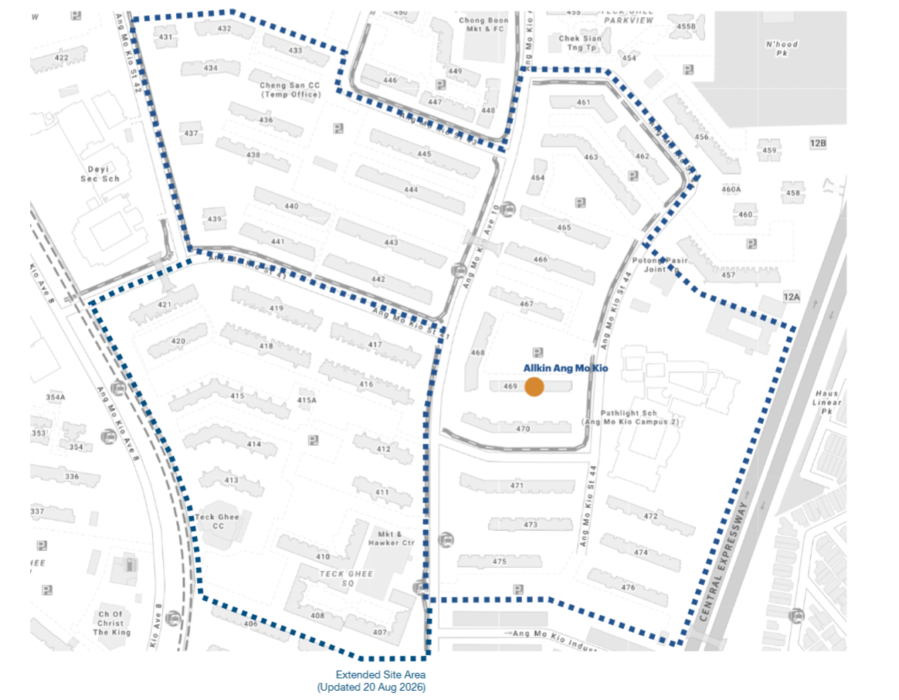

Participant guide
How to take part
You need a phone and about three minutes. Go to a public space in Teck Ghee, measure the noise, look around at who is using the space, then send it all through a short form.
What we collect
We ask for
- The postal code of the nearest block
- The type of public space (void deck, playground and so on)
- The noise level in decibels (dB) and what is making it
- Which age groups are using the space, and what they are doing
- Time of day and how long the noise lasted
- How the noise affects your use of the space
- Your age group (optional) and a note (optional)
We never ask for
- Your name, email or phone number
- Your unit number
- Photos or recordings of people
- Anyone's exact age. Ages are only recorded in broad groups
Every report is shown at block level only, so no reading can be traced to a household.
Where to take readings
Any public space inside the dotted boundary: the blocks between Ang Mo Kio Avenue 8 and the CTE, around Ang Mo Kio Avenue 10 and Streets 41 to 44.

Five steps
-
Get a sound meter app
Any free decibel meter works. These are reliable and free:
- iPhone: NIOSH SLM
- Android: Sound Meter or Decibel X
Allow microphone access when the app asks. Nothing is recorded or uploaded by the app.
-
Go to a public space
Any shared space inside the Teck Ghee site area counts: a void deck, playground, fitness corner, hawker centre, sports court, park or covered walkway. Stand where people sit, play or gather.
- Hold the phone at chest height
- Point the bottom of the phone (the microphone) toward the noise
- Keep your fingers off the microphone and stay quiet
-
Measure for 30 seconds
Start the meter and let it run for 30 seconds. Write down the average figure, labelled Avg or LAeq in most apps. Do not use the peak (Max) figure.
A single loud bang pushes the peak up but tells us little. The average shows what you actually live with.
-
Look around, and find the postal code
Note who is using the space right now: children, teenagers, young adults, adults or seniors, and what they are doing. Count yourself too.
Then find the postal code of the nearest block, on the block number plaque or the lift lobby notice board.
Teck Ghee postal codes start with 560, for example 560413 for Block 413.
-
Send the form
Open Report noise and fill in the form. It has eleven short questions and takes under three minutes.
Your reading appears on the map within a few minutes. Refresh the page to see it.
Reading the numbers
The map colours each report by these bands. The descriptions are rough everyday comparisons.
Good habits
Do
- Report the same space at different times of day, when different age groups use it
- Report quiet moments too, including empty spaces, so there is something to compare with
- Use the note field to say what you saw, e.g. "piling at the site across the road"
Don't
- Record or photograph neighbours
- Name people or units in the notes
- Send the same reading more than once